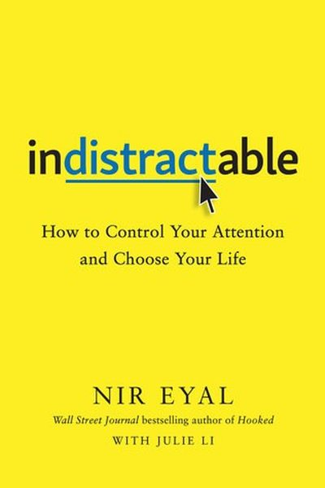

Library › Productivity
Indistractable — Summary & Key Lessons

The former tech insider who built habit-forming apps reveals how to break their spell — and take back your attention.
📖 OPEN THE FULL INTERACTIVE BREAKDOWN →🌐 Read it in Hindi, Hinglish, Gujarati, Tamil & 22 more languages — free, with audio.
💡 The Big Idea
Nir Eyal (the author of Hooked, which taught companies how to build addictive apps) now teaches the other side: how to be indistractable. His central claim: distraction is not a technology problem — it's an emotional escape from internal discomfort (boredom, stress, loneliness). The fix has four parts: master internal triggers, make time for traction, hack back external triggers, and prevent distraction with pacts. Attention is the new currency; you're the only one who can defend it.
🧠 The 6 Key Lessons
Lesson 1: Distraction Starts Inside
Master Internal Triggers
Eyal's research: we reach for our phones not because the phone is irresistible but because it relieves an uncomfortable feeling — boredom, anxiety, uncertainty, loneliness. The trigger is internal; the phone is just the cheapest pacifier. Until you deal with the feeling, no app blocker will hold. The fix: observe the urge without acting, and address the underlying emotion.
📖 Example: Eyal describes checking his phone during hard writing — the moment a sentence got difficult, his hand reached out. The phone wasn't the enemy; the difficulty was. Naming the feeling ('I'm avoiding hard work') made the urge manageable. Read the full example →
⚡ Do this: Next time you reach for your phone, pause and name the feeling: bored? anxious? stuck? Write it down. Do that for a week and you'll see your real distraction pattern.
Lesson 2: Timebox Your Life
Make Time for Traction
You can't call something a distraction if you haven't decided what to focus on. Eyal's tool: timeboxing — schedule every part of your day (work, family, yourself) in advance, so when the pull comes you have a plan to return to. Even the 'distracting' stuff gets scheduled — the goal is that your time is chosen, not hijacked.
📖 Example: Eyal timeboxes everything, including email windows and social time — and even his wedding anniversary dinner was timeboxed ('6:30 to 9'). A calendar with values beats a to-do list with intentions. Read the full example →
⚡ Do this: Tonight, timebox tomorrow: work blocks, breaks, family, yourself — including one 15-minute 'time for traction' block for your top priority.
Lesson 3: Hack Back External Triggers
External Triggers
External triggers — notifications, sounds, badges, the icon itself — are designed to interrupt you, and each one costs you focus (studies show it takes ~23 minutes to fully recover). Eyal's instructions are surgical: turn off all non-human notifications, keep only the apps that serve you on the home screen, and unsubscribe ruthlessly. The phone is a tool; you decide when it speaks.
📖 Example: Eyal's own setup: only calls and texts from family interrupt; everything else waits in a folder he checks at scheduled times. His inbox has no red badge — the badge, he notes, was invented to make you feel incomplete. Read the full example →
⚡ Do this: Today, in one sitting: turn off every non-human notification, move social apps off your home screen, and schedule two 'check times' for them daily.
Lesson 4: Pacts: Bind Future You
Prevent Distraction
When willpower fails (it will), use pacts — commitments that make future misbehavior costly or impossible. Effort pacts (make distraction harder: log out, delete the app), price pacts (pay money if you break the rule), and identity pacts (announce who you are: 'I'm not a social-media-scroller'). The more binding, the more effective.
📖 Example: Eyal describes using a $10-per-slip pact with his wife to enforce no-phone dinners, and app blockers that require a wait before unlocking — the delay alone kills most urges. People who announce 'I don't use Instagram' on social media report better adherence… Read the full example →
⚡ Do this: Pick your weakest moment (morning scroll? evening TV?) and bind future you: delete the app, put the charger across the room, or set a money penalty with a friend.
Lesson 5: Your Values Need a Schedule
The Plan
The final layer: indistractability only works if the time you protect is aligned with your values. Eyal's tool is a 'timeboxed values' exercise — list what matters (health, family, craft), then actually schedule those values. Unscheduled values are just wishes. When your calendar matches your values, focus stops feeling like deprivation.
📖 Example: Eyal's calendar literally contains 'Muse' blocks (writing his book), 'Littles' blocks (his daughter), and exercise — if it's not on the calendar, it doesn't exist. His annual family vacation is booked a year ahead, before any meeting can claim it. Read the full example →
⚡ Do this: Write your top 4 values and check your calendar: does each value have a recurring time slot? Add the missing ones tonight — before anything else claims them.
Lesson 6: Master Internal Triggers Before External Ones
What Motivates Us
Eyal's counterintuitive finding: most distraction is driven not by notifications but by internal discomfort — boredom, anxiety, loneliness — that we soothe with screens. The phone is the pacifier, not the problem. Learning to sit with uncomfortable emotions without escaping into distraction is the root skill of focus.
📖 Example: People check their phones most often during moments of tension, waiting or difficult work — the device offers relief from the feeling, not value. Those who practice noticing the urge and letting it pass without acting find the urge loses its power within… Read the full example →
⚡ Do this: Next time you reach for your phone, pause and name the emotion underneath the urge; sit with it for two minutes before deciding.
✅ 5-Step Action Plan
- Track your internal triggers for a week — name the feeling, not the app.
- Timebox tomorrow tonight, including breaks and yourself.
- Kill all non-human notifications and schedule check times.
- Set one pact (effort, price or identity) for your weakest moment.
- Put your top 4 values on the calendar — or they don't exist.
⚠️ When This Doesn't Work
Eyal's 'traction over distraction' is the best focus book ever written — and Hike is its warning: an entire company optimised for traction — the most addictive messaging app in India, 100 million users, brilliantly engineered hooks — and the traction evaporated when WhatsApp's network effect and Facebook's capital made the hooks irrelevant. The book's premise — distraction is the enemy — misses the deeper lesson: sometimes the distraction isn't the problem, the network is. You can master your attention and still lose the market to someone who mastered distribution.
💀 The Graveyard Proves It
💬 Hike Messenger — India's $1.4B WhatsApp Rival That Vanished. Burn: $260M+ raised; app shut down. Read the full case study →
💬 Best Quotes from Indistractable
- “Distraction is an unhealthy escape from reality.”
- “You can't call something a distraction unless you know what it's distracting you from.”
- “Traction is any action that moves you toward what you want; distraction is anything else.”
Interactive version: mark lessons as read, listen in your language, share quote cards.